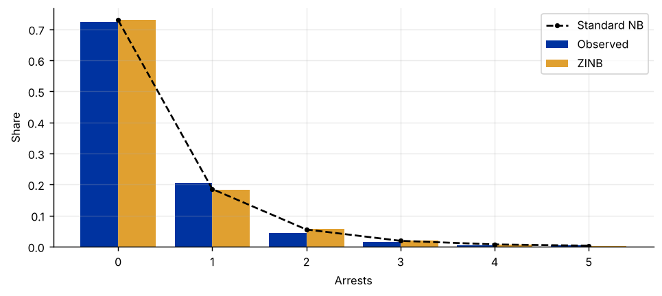

Run this model on your own data in Open Econometric Systems →
Step 1The question and the models
What explains the number of times a young man is arrested in a year? Most men are never arrested, and the ones who are may be arrested several times. Two features of the data matter: a great many zeros, and a skewed tail.
Zero-inflated model. With probability \(\pi_i\) the person is a structural zero (never arrested whatever the circumstances); otherwise the count follows a Poisson or negative binomial with mean \(\mu_i\):
Hurdle model. A logit decides whether \(y_i > 0\), and a zero-truncated count model gives the size:
| Variable in the file | Definition |
|---|---|
narr86 |
number of arrests in 1986 |
pcnv |
proportion of prior arrests that led to conviction |
ptime86 |
months in prison in 1986 |
qemp86 |
quarters employed in 1986 (0 to 4) |
black, hispan |
race and ethnicity indicators |
Before you estimate anything
- Does the story of the zeros make sense? A zero-inflated model needs a group that is never at risk. Counting doctor visits, there may be people who never go. For arrests, "never arrested whatever happens" is a stretch; a hurdle (a first arrest, then repeat arrests) can be more natural. The data cannot decide this for you.
- Do the zeros really exceed the standard model's prediction? Fit the Poisson and negative binomial first. A negative binomial often absorbs excess zeros without a second equation.
- Which variables drive the zeros? The zero equation can use the same variables as the count equation, but identification is stronger if some variable affects only one of them.
How to write it: model section
Seventy-two percent of the men have no arrest in 1986, so we compare the standard negative-binomial model with a zero-inflated negative binomial, in which a logit equation separates men who are never arrested from those who are at risk, and with a negative-binomial hurdle model, in which a logit equation determines whether any arrest occurs and a truncated count model gives the number. We compare the models by AIC and BIC, a Vuong test and the predicted share of zeros.
Step 2Load the data and check the zeros
import warnings; warnings.filterwarnings("ignore")
import numpy as np, pandas as pd
import matplotlib.pyplot as plt
import statsmodels.api as sm
from scipy import stats, optimize
from statsmodels.tools.numdiff import approx_hess
d = pd.read_csv("arrests.csv")
y = d.narr86.to_numpy(float)
xs = ["pcnv", "ptime86", "qemp86", "black", "hispan"]
X = sm.add_constant(d[xs]).to_numpy(float); names = ["const"] + xs
print(f"{len(d)} men; mean {y.mean():.2f}, variance {y.var(ddof=1):.2f}; {np.mean(y == 0):.1%} zeros")
print(d.narr86.value_counts().sort_index().rename("men").to_frame().T.to_string())
pois = sm.GLM(y, X, family=sm.families.Poisson()).fit()
print(f"\nPoisson predicts {stats.poisson.pmf(0, pois.mu).mean():.1%} zeros, against {np.mean(y == 0):.1%} observed")2725 men; mean 0.40, variance 0.74; 72.3% zeros narr86 0 1 2 3 4 5 6 7 9 10 12 men 1970 559 121 42 12 13 4 1 1 1 1 Poisson predicts 68.3% zeros, against 72.3% observed
How to read it
The variance (0.74) is only about 1.8 times the mean (0.40), and the Poisson model predicts 68% zeros against the 72% in the data. The gap is moderate, not dramatic, so the question is whether the improvement from a second equation is worth its extra parameters.
Step 3Step 1: The standard negative binomial
nb = sm.NegativeBinomial(y, X, loglike_method="nb2").fit(start_params=np.r_[pois.params, 0.5], method="bfgs", maxiter=2000, disp=0)
a = nb.params[-1]; r = 1 / a; mu_nb = np.exp(X @ nb.params[:-1])
print(pd.DataFrame({"coef": nb.params, "std err": nb.bse}, index=names + ["alpha"]).round(4).to_string())
print(f"\nlog-likelihood {nb.llf:.1f}, AIC {nb.aic:.1f}; predicted share of zeros {stats.nbinom.pmf(0, r, r / (r + mu_nb)).mean():.3f}")coef std err const -0.5240 0.0793 pcnv -0.4574 0.1035 ptime86 -0.1079 0.0247 qemp86 -0.2400 0.0241 black 0.7033 0.0934 hispan 0.5507 0.0900 alpha 1.0285 0.1162 log-likelihood -2185.4, AIC 4384.8; predicted share of zeros 0.729
How to read it
The negative binomial raises the predicted share of zeros to 73%, close to the 72% observed, and its dispersion parameter alpha is 1.03. A higher conviction rate (−0.46), more prison time (−0.11) and more quarters of employment (−0.24) lower the log expected number of arrests, while the black (0.70) and Hispanic (0.55) indicators raise it. This is the benchmark that the two-equation models must beat.
Step 4Step 2: Zero-inflated and hurdle models by maximum likelihood
def fit_zero(kind, dist, Xc=X, Zc=X):
kz, kx = Zc.shape[1], Xc.shape[1]
def obs(t, yy):
g, b = t[:kz], t[kz:kz + kx]; mu = np.exp(Xc @ b); pi = 1 / (1 + np.exp(-(Zc @ g)))
if dist == "poisson":
lf, f0 = stats.poisson.logpmf(yy, mu), stats.poisson.pmf(0, mu)
else:
rr = 1 / np.exp(t[-1]); lf, f0 = stats.nbinom.logpmf(yy, rr, rr / (rr + mu)), stats.nbinom.pmf(0, rr, rr / (rr + mu))
if kind == "zi":
return np.where(yy == 0, np.log(pi + (1 - pi) * f0), np.log1p(-pi) + lf)
return np.where(yy == 0, np.log1p(-pi), np.log(pi) + lf - np.log1p(-f0))
g0 = np.zeros(kz); g0[0] = -1 if kind == "zi" else 0
if kind == "hurdle":
g0 = sm.Logit((y > 0).astype(float), Zc).fit(disp=0).params
t0 = np.r_[g0, nb.params[:-1] if dist == "nb" else pois.params, [np.log(a)] if dist == "nb" else []]
f = lambda t: -obs(t, y).sum()
o = optimize.minimize(f, t0, method="BFGS", options={"gtol": 1e-8, "maxiter": 3000})
V = np.linalg.inv(approx_hess(o.x, f))
return o.x, np.sqrt(np.diag(V)), -o.fun, obs
fits = {k: fit_zero(*k) for k in [("zi", "poisson"), ("zi", "nb"), ("hurdle", "poisson"), ("hurdle", "nb")]}
lab = {("zi", "poisson"): "ZIP", ("zi", "nb"): "ZINB", ("hurdle", "poisson"): "Poisson hurdle", ("hurdle", "nb"): "NB hurdle"}
rows = [["Poisson", pois.llf, 6, pois.aic, -2 * pois.llf + np.log(len(y)) * 6], ["Negative binomial", nb.llf, 7, nb.aic, -2 * nb.llf + np.log(len(y)) * 7]]
for k, (t, se, ll, ob) in fits.items():
rows.append([lab[k], ll, len(t), -2 * ll + 2 * len(t), -2 * ll + np.log(len(y)) * len(t)])
print(pd.DataFrame(rows, columns=["model", "log-lik", "params", "AIC", "BIC"]).set_index("model").round(1).to_string())log-lik params AIC BIC model Poisson -2287.7 6 4587.4 4622.9 Negative binomial -2185.4 7 4384.8 4426.2 ZIP -2180.4 12 4384.7 4455.6 ZINB -2139.2 13 4304.5 4381.3 Poisson hurdle -2189.6 12 4403.2 4474.2 NB hurdle -2140.7 13 4307.4 4384.2
How to read it
Adding a second equation always raises the log-likelihood, so we compare AIC and BIC, which penalize the extra parameters. The negative-binomial versions (ZINB and the NB hurdle) fit much better than the Poisson versions, because a Poisson count cannot capture the tail. Both are better than the standard negative binomial by AIC (4,304 and 4,307 against 4,385), and the ZINB also wins on BIC (4,381 against 4,426 for the standard model). The zero-inflated Poisson (AIC 4,385) does no better than the standard negative binomial, so the extra equation helps only when the count part can also handle the tail. The two zero-augmented negative binomials are close to each other, which is typical.
Step 5Step 3: Interpret the two equations of the ZINB
t, se, ll, obs = fits[("zi", "nb")]
kz = X.shape[1]
tab = pd.DataFrame({"zero equation: coef": t[:kz], "s.e.": se[:kz], "count equation: coef": t[kz:2 * kz], "s.e. ": se[kz:2 * kz]}, index=names)
print(tab.round(3).to_string())
print(f"\nalpha = {np.exp(t[-1]):.3f}")
pi = 1 / (1 + np.exp(-(X @ t[:kz])))
print(f"Average probability of a structural zero: {pi.mean():.3f}")
print(f"Average count among the at-risk (mean of mu): {np.exp(X @ t[kz:2 * kz]).mean():.3f}")zero equation: coef s.e. count equation: coef s.e. const -6.122 1.778 -0.629 0.080 pcnv 6.784 1.801 0.327 0.163 ptime86 0.639 0.146 0.170 0.049 qemp86 0.031 0.133 -0.208 0.026 black -0.741 0.458 0.593 0.094 hispan -0.742 0.428 0.375 0.095 alpha = 0.672 Average probability of a structural zero: 0.178 Average count among the at-risk (mean of mu): 0.650
How to read it
The two equations answer different questions. In the zero equation, a higher conviction rate (6.8) and more prison time (0.64) raise the probability of being a structural zero, and the black and Hispanic indicators lower it (−0.74 each, significant only at the 10% level). Prison time as a predictor of "never at risk" is hard to read literally (men who were in prison cannot be arrested outside), a warning that the zero equation may be a stand-in for something else. In the count equation, more employment lowers the expected number of arrests among men at risk (−0.21), and the black (0.59) and Hispanic (0.38) indicators raise it. The average probability of a structural zero is 18%. When the interpretation of the zero equation is awkward, say so and prefer the hurdle interpretation or the standard model.
Step 6Step 4: Test and compare against the standard model
t_zi, se_zi, ll_zi, obs_zi = fits[("zi", "nb")]
std_obs = stats.nbinom.logpmf(y, r, r / (r + mu_nb))
mi = obs_zi(t_zi, y) - std_obs
vuong = np.sqrt(len(y)) * mi.mean() / mi.std(ddof=1)
print(f"Vuong test, ZINB against the standard NB: V = {vuong:.2f} (p = {2 * stats.norm.sf(abs(vuong)):.1e}); positive favors ZINB")
p_zinb = np.mean(np.exp(obs_zi(t_zi, np.zeros(len(y)))))
print(f"Share of zeros: observed {np.mean(y == 0):.3f}, standard NB {stats.nbinom.pmf(0, r, r / (r + mu_nb)).mean():.3f}, ZINB {p_zinb:.3f}")
ks = np.arange(0, 6)
o_ = [np.mean(y == k) for k in ks]
s_ = [stats.nbinom.pmf(k, r, r / (r + mu_nb)).mean() for k in ks]
z_ = [np.mean(np.exp(obs_zi(t_zi, np.full(len(y), float(k))))) for k in ks]
fig, ax = plt.subplots(figsize=(7.5, 3.4))
ax.bar(ks - 0.2, o_, 0.4, label="Observed", color="#0033a0"); ax.bar(ks + 0.2, z_, 0.4, label="ZINB", color="#e0a030")
ax.plot(ks, s_, "k.--", label="Standard NB"); ax.set_xlabel("Arrests"); ax.set_ylabel("Share"); ax.legend()
plt.tight_layout()
print("Largest absolute gap, counts 0 to 5:", f"standard NB {max(abs(np.array(o_) - np.array(s_))):.4f}, ZINB {max(abs(np.array(o_) - np.array(z_))):.4f}")Vuong test, ZINB against the standard NB: V = 4.47 (p = 7.8e-06); positive favors ZINB Share of zeros: observed 0.723, standard NB 0.729, ZINB 0.731 Largest absolute gap, counts 0 to 5: standard NB 0.0198, ZINB 0.0229

How to read it
The Vuong test favors the zero-inflated model (V = 4.5), but it does not reproduce the share of zeros better (73.1% against 72.9% for the standard model, 72.3% observed). The gain is in the likelihood rather than in the shape of the marginal distribution: both models are within about two percentage points of the observed shares for the counts 0 to 5 (largest gap 2.3 for the ZINB and 2.0 for the standard model). The Vuong statistic is a test of non-nested models and says which model is closer to the data, not which story is true.
Step 7What to report in the paper
Report the share of zeros and the Poisson-predicted share; both equations with standard errors; AIC, BIC and the Vuong test against the standard model; the economic reason for separating zeros; and the average marginal effects on the expected count when a variable appears in both equations.
How to write it: results and robustness
Table 3 compares the standard negative binomial with the zero-inflated and hurdle versions. The zero-inflated negative binomial has the lowest AIC (4,304 against 4,385) and BIC (4,381 against 4,426), and a Vuong test favors it over the standard model (V = 4.5); the negative-binomial hurdle model is close (AIC 4,307). Employment lowers the expected number of arrests among men at risk, and the black and Hispanic indicators raise it. Because the zero equation loads on prison time and prior convictions, we do not interpret it literally as a group that is never at risk, and the models do not differ in how well they reproduce the share of zeros (73.1% against 72.3% observed).
Step 8Common mistakes
Mistakes to avoid
- Adding a zero equation because there are many zeros. Many zeros are normal for a low-mean count. Compare with the standard negative binomial first.
- Telling a story the data cannot support. "Structural zeros" must exist in the subject matter. Otherwise use a hurdle or the standard model.
- Reading the zero-equation sign as the effect on the count. In a zero-inflated model it refers to the structural zero; in a hurdle model, to a positive count.
- Interpreting the Vuong test as a test of the zero-inflation story. It compares fit only.
- Ignoring the effect on the expected count. A variable that enters both equations acts through both. Report the marginal effect on E[y].
- Overparametrized zero equations. With the same variables in both equations the model can be weakly identified; if the likelihood is flat, use fewer variables.
- Local maxima. Zero-inflated likelihoods can have several maxima. Start from several points and keep the highest log-likelihood.